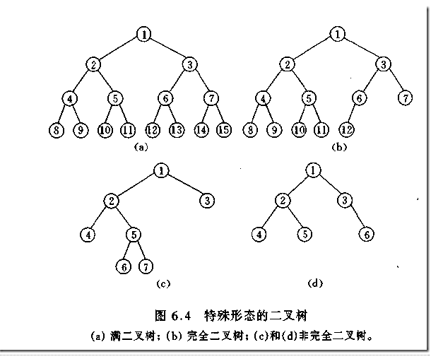
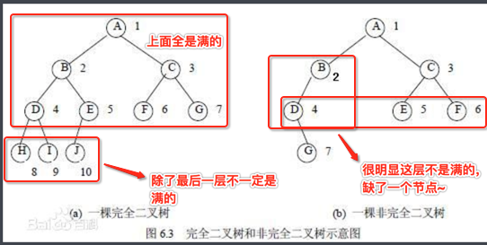
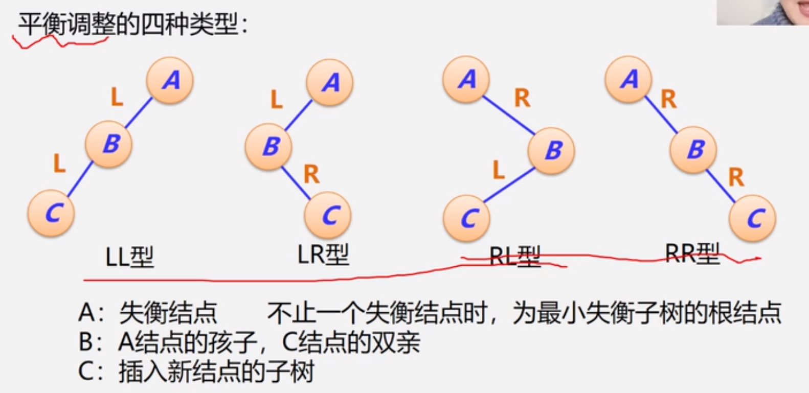
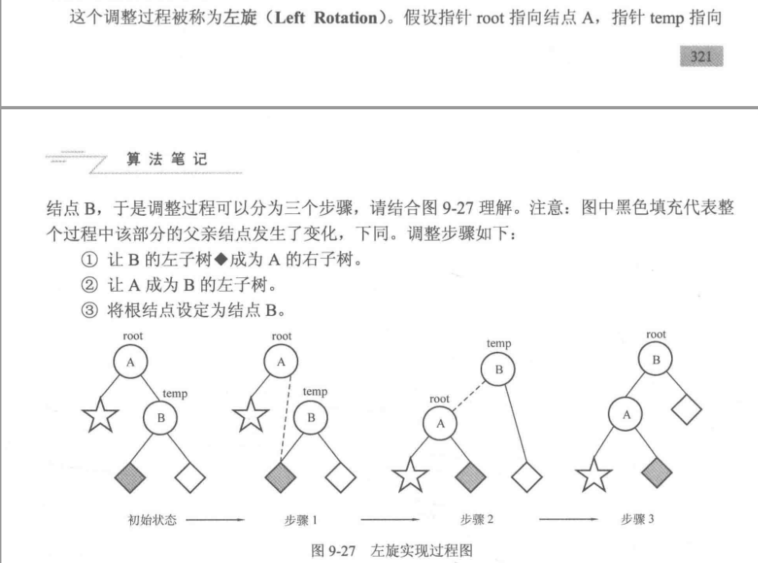
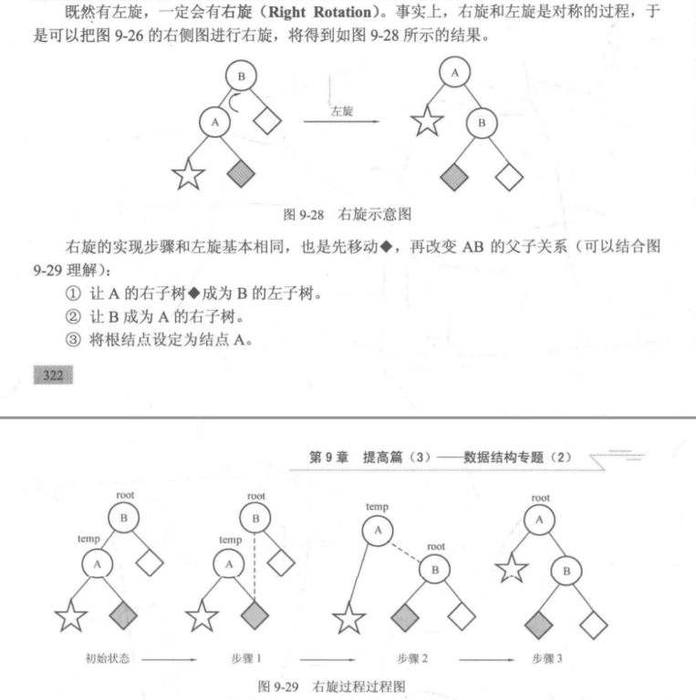
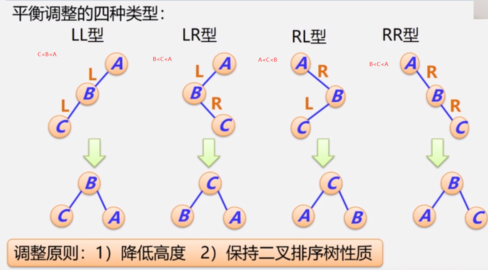
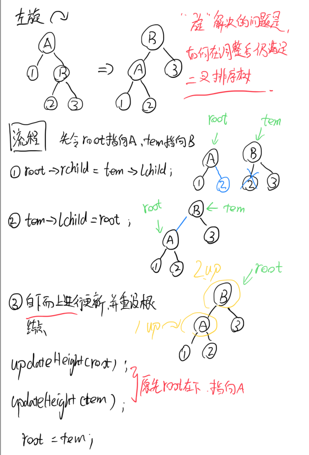
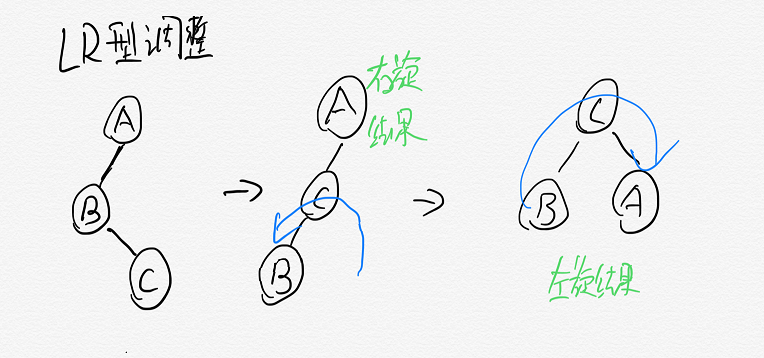
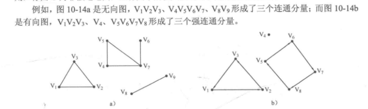

C/C++快速入门
基本数据类型
变量类型
整型
绝对值在10的9次方范围以内都可以定义为int，除此之外用long long
关于long long的使用
‘long long bigNum=123LL;’
可以给long long 起个别名
typedef long long LL;
LL a=1234LL;
浮点型
就用double,不要用float
强制类型转换
(新类型名)变量名
double r = 12.56;
printf("%d",(int)r);
|
输入输出问题
scanf:
long long %lld
double %lf
printf:
long long %lld
double %f
输出格式
%0md 当变量不足m位时，前面补足0输出
int a=123;
printf("%05d",a);
|
%.mf 可以让浮点数保留m位小数输出，保留方式自动四舍五入
double d1=12.3456;
printf("%.0f",d1);
printf("%.0f",12.6);
printf("%.1f",d1);
printf("%.2f",d1);
printf("%.3f",d1);
printf("%.4f",d1);
|
常用math函数
加入 cmath
以下返回类型均为double类型
fabs()
对double变量取绝对值
floor() ceil()
分别是向上取整和向下取整
floor(-5.2) -6
ceil(-5.2) -5
floor(5.2) 5
ceil(5.2) 6
pow(double r,double p)
r^p
sqrt(double x)
返回算数平方根
log(double x)
logab=log(b)/log(a)酸楚以a为底b的对数
PI=acos(-1.0)
printf(“%.0f”,12.6);//13
数组
如果申请数组大小比较大1e6级别，需要将其定义在主函数外面，否则会使程序异常推出，系统内部申请的局部变量来自于系统栈，全局变量来源于静态存储区
使用memset初始化数组(cstring)，只能-1 和 0
‘memset(a,0,sizeof(a))’
关于字符串的问题
接收带空格的字符串使用gets(),使用scanf后，要先用getchar()，清除掉缓存区的回车键
char str1[20],str2[20];
scanf("%s",str1);
getchar();
gets(str2);
|
使用sscanf和sprinf处理字符串(cstdio)
sprintf的使用
sprintf(screen,格式控制,数据)
<—-
char str[20];
int data=1024;
sprintf(str,"%d",data);
sprintf(str,"0x%x",data);
sprintf(str,"0%o",data)
char* s1="Hello";
char* s2="World";
sprintf(str,"%s %s",s1,s2);
|
sscanf的使用
sscanf(数据源,格式控制,输入对象)
——–>
sscanf可以支持格式字符%[]
- -表示范围 %[1-9]表示只读取1-9这几个数字
- ^表示不取 %[^\n]表示读取除了回车以外的所有字符
- 同时用, %[1-9,a-z]表示同时读取1-9，a-z的所有字符
- 原则：从第一个在指定范围内的数字开始读取，到第一个不在范围内的数字结束
char str[20]="123";
int num;
sscanf(str,"%d",&num);
|
结构体的使用
利用结构体的构造函数实现其初始化
struct Point{
int x,y;
Point(){}
Point(int _x,int _y):x(_x),y(_y){}
}
|
补充
cin与cout
如果想读入带空格的字符串
char str[100];
cin.getline(str,100);
string s;
getline(cin,s);
|
浮点数的比较
const double eps=1e-8;
#define Equ(a,b) ((fabs((a)-(b)))<(eps))
#define More(a,b) (((a)-(b))>(eps))
#define Less(a,b) (((a)-(b))<(-eps))
!Less(a,b)
!More(a,b)
|
黑盒测试之多点测试
while(scanf("%s",str)!=EOF){}
while(gets(str)!=NULL){}
|
入门模拟
日期处理
题目
求两个日期之间的天数，如果两个日期是连续的，规定他们之间的天数为两天
输入格式
20130101
20130105
输出格式
5
#include<cstdio>
#include<iostream>
using namespace std;
int month[13][2]={
{0,0},{31,31},{28,29},{31,31},{30,30},{31,31},
{30,30},{31,31},{31,31},{30,30},{31,31},{30,30},
{31,31}
};
bool isLeap(int year){
return (year%4==0 && year%100!=0) || (year%400==0);
}
int main(){
int time1,y1,m1,d1;
int time2,y2,m2,d2;
while(scanf("%d%d",&time1,&time2)!=EOF){
if(time1>time2){
int tem=time1;
time1=time2;
time2=tem;
}
y1=time1/10000,m1=time1%10000/100,d1=time1%100;
y2=time2/10000,m2=time2%10000/100,d2=time2%100;
int ans=1;
while(y1<y2 || m1<m2 || d1<d2){
d1++;
if(d1==month[m1][isLeap(y1)]+1){
m1++;
d1=1;
}
if(m1==13){
y1++;
m1=1;
}
ans++;
}
printf("%d\n",ans);
}
return 0;
}
|
进制转换
int x,y;
string a;
string solution(){
int tem;
for(int i=0;i<a.size;i++){
if(a[i]>='0' && a[i]<='9'){
tem=a[i]-'0';
}else{
tem=a[i]-'A'+10;
}
sum=sum*x+tem;
}
char t;
string ans="";
while(1){
tem=sum%y;
if(tem>=0 && tem<=9){
t=(char)('0'+tem);
}else{
t=(char)('A'+tem-10);
}
ans=t+ans;
sum/=y;
if(sum==0){
return ans;
}
}
}
|
算法初步
排序
使用sort并结合结构体使用
struct Student{
char name[10];
char id[10];
int score;
int rank;
}stu[maxn];
bool cmp(Student a,Student b){
if(a.score!=b.score){
return a.score>b.socre;
}else{
return strcmp(a.name,b.name)<0;
}
}
stu[0].r=1;
for(ing i=1;i<n;i++>){
if(stu[i].score==stu[i-1].score){
stu[i].r=stu[i-1].r;
}else{
stu[i].r=i+1;
}
}
|
相关例题PAT A1025
贪心
考虑局部的最优解，进而得到全局的最优解
区间不相交问题：给出N个开区间，从中选择尽可能多的开区间，使得两两之间没有交集
#include<iostream>
#include<cstdio>
#include<algorithm>
using namespace std;
struct Interval{
int x,y;
}I[100];
int n;
bool cmp(Interval a,Interval b){
if(a.x!=b.x){
return a.x>b.y;
}else{
return a.y<b.y;
}
}
int main(){
while(scanf("%d",&n),n!=0){
for(int i=0;i<n;i++){
scanf("%d%d",&I[i].x,&I[i].y);
}
sort(I,I+n,cmp);
int ans=1,lastX=I[0].x;
for(int i=1;i<n;i++){
if(I[i].y<=lastX){
lastX=I[i].x;
ans++;
}
}
printf("%d\n",ans);
}
return 0;
}
|
二分
二分查询
前提要严格递增或递减
int binarySearch(int arr[],int l,int r,int x){
int mid;
while(l<=r){
mid=l+(r-l)/2;
if(arr[mid]==x){
return mid;
}else if(arr[mid]>x){
r=mid-1;
}else{
l=mid+1;
}
}
return -1;
}
int lowerBound(int arr[],int l,int r,int x){
int mid;
while(l<r){
mid=l+(r-l)/2;
if(arr[mid]>=x){
r=mid;
}else{
l=mid+1;
}
}
return l;
}
int upperBound(int arr[],int l,int r,int x){
int mid;
while(l<r){
mid=l+(r-l)/2;
if(arr[mid]>x){
r=mid;
}else{
l=mid+1;
}
}
return l;
}
|
快速幂
基于二分的思想，求a^b %m
- 如果b是奇数 –> a^b=a^(b-1) * a
- 如果b是偶数 –> a^b=a^(b/2)*a^(b/2)
typedef long long LL;
LL binaryPow1(LL a,LL b,LL m){
if(b==0){
return 1;
}
if(b&1){
return a*binaryPow1(a,b-1,m);
}else{
LL tem = binaryPow1(a,b/2,m)%m;
return tem*tem%m;
}
}
LL binaryPow2(LL a,LL b,LL m){
LL ans=1;
while(b>0){
if(b&1){
ans=ans*a%m;
}
a=a*a%m;
b>>=1;
}
return ans;
}
|
双指针(Two Pointers)
引例
给定一个递增正整数序列，一个正整数M，求序列中和为M的两个数，输出所有方案
while(i<j){
if(a[i]+a[j]==m){
printf("%d %d",a[i],a[j]);
i++;
j--;
}else if(a[i]+a[j]<m){
i++;
}else{
j--;
}
}
|
合并两个递增序列A、B，合并为一个递增序列C
int merge(int a[],int b[],int c[],int n,int m){
int ai=0,bi=0,ci=0;
while(ai<n && bi<m){
if(a[ai]<=b[bi]){
c[ci++]=a[ai++];
}else{
c[ci++]=b[bi++];
}
}
while(ai<n){
c[ci++]=a[ai++];
}
while(bi<m){
c[ci++]=b[bi++];
}
}
|
快速排序
(以下默认从小到大)
思路：划分区间，取元素arr[i],使左边均不大于arr[i],使右边均不小于arr[i],递归使所有元素都满足这个效果
int partition(int arr[],int l,int r){
int tem=arr[l];
while(l<r){
while(l<r && arr[r]>tem){
r--;
}
arr[l]=arr[r];
while(l<r && arr[l]<tem){
l++;
}
arr[r]=arr[l];
}
return l;
}
void quickSort(int arr[],int l,int r){
if(l<r){
int pos=partition(arr,l,r);
quickSort(arr,l,pos-1);
quickSort(arr,pos+1,r);
}
}
|
其他高效技巧
把结果打表放到数组中
数学问题
最大公约数和最小公倍数
int gcd(int a,int b){
if(b==0){
return a;
}
return gcd(b,a%b);
}
int lcm(int a,int b){
int d=gcd(a,b);
return a/d*b;
}
|
分数的四则运算
struct Fraction{
int up,down;
}
Fraction reduction(Fraction res){
if(res.down<0){
res.up=-res.up;
res.down=-res.down;
}
if(res.up==0){
res.down=1;
}else{
int d=gcd(abs(res.up),res.down);
res.up/=d;
res.down/=d;
}
}
Fraction add(Fraction a,Fraction b){
Fraction res;
res.up=a.up*b.down+b.up*a.down;
res.down=a.down*b.down;
return reduction(res);
}
void showRes(Fraction res){
res=reduction(res);
if(res.down==1){
printf("%d",res.up);
}else if(abs(res.up)>res.down){
printf("%d %d/%d",res.up/res.down,abs(res.up)%res.down,res.down);
}else{
printf("%d/%d",res.up,res.down);
}
}
|
素数
const int maxn=101;
int prime[maxn],pNum;
bool vis[maxn];
void findP(){
for(int i=2;i<maxn;i++){
if(vis[i]==false){
prime[pNum++]=i;
}
for(int j=2*i;j<maxn;j+=i){
vis[j]=true;
}
}
}
|
质因子分解
struct{
int x,cnt;
}fac[10];
const int maxn=10000;
int n=100;
int prime[maxn],pNum;
int nFac=0;
void DecomFac(){
for(int i=0;i<pNum && prime[i]<=sqrt(n);i++){
if(n%prime[i]==0){
fac[nFac].x=prime[i];
fac[nFac].cnt=0;
while(n%prime[i]==0){
fac[nFac].cnt++;
n/=prime[i];
}
nFac++;
}
if(n==1){
break;
}
}
if(n!=1){
fac[nFac].x=n;
fac[nFac].cnt=1;
nFac++;
}
}
|
典型列题PAT-A1059
大整数运算
struct bign{
int d[1000];
int len;
bign(){
memset(d,0,sizeof(d));
len=0;
}
};
bign change(char str[]){
bign a;
a.len=strlen(str);
for(int i=0;i<a.len;i++){
a.d[i]=str[a.len-i-1]-'0';
}
return a;
}
int compare(bign a,bign b){
if(a.len>b.len){
return 1;
}
if(a.len<b.len){
return -1;
}
for(int i=a.len-1;i>=0;i--){
if(a.d[i]>b.d[i]){
return 1;
}
if(a.d[i]<b.d[i]){
return -1;
}
}
return 0;
}
bign add(bign a,bign b){
bign c;
int carry=0;
for(int i=0;i<a.len || i<b.len;i++){
int tem=a.d[i]=b.d[i]+carry;
c.d[c.len++]=tem%10;
carry=tem/10;
}
if(carry!=0){
c.d[c.len++]=carry;
}
return c;
}
bign sub(bign a,bign b){
bign c;
for(int i=0;i<a.len;i++){
if(a.d[i]<b.d[i]){
a.d[i+1]--;
a.d[i]+=10;
}
c.d[c.len++]=a.d[i]-b.d[i];
}
while(c.len-1>=1 && c.d[c.len-1]==0){
c.len--;
}
return c;
}
|
STL
数据结构
链表
主要用到的是静态链表
静态链表的实现原理是hash，通过建立一个结构体数组，并令数组的下标直接表示结点的地址，来达到直接访问结点的效果
简单的例题PAT-A1032
一般步骤
- 定义静态链表
- flag=false
- 由初始结点遍历。标记有效结点，计数cnt
- sort
PAT-A1052
搜索专题
联通块问题
https://sedationh.github.io/2019/11/16/%E8%BF%9E%E9%80%9A%E5%9D%97%E4%B8%AA%E6%95%B0/
迷宫问题
<>
queue使用的注意
push操作创建的是该元素的一个副本，两者的修改不会产生相互影响，不过想要交互，入队下标
树
树与二叉树
在数据结构中，一般把根结点置于最上方，向下延伸多条边形成子树
树的实用性质：
- 树可以没有结点，这种情况把树称为空树
- 树的层次（layer）从根节点开始算起，为第一层
- 把结点子树的个数称为结点的度（degree），树中结点的最大度称为树的度
- 由于一条边连接两个点，且树中不存在环，因此对于有n个结点的树，边数为n-1，且满足联通、边数等于顶点数-1的结构一定是一颗树
- 叶子结点被定义为度为0的结点，因此当一棵树中只有一个根节点时，根节点也算做叶子结点
- 结点的深度（depth）是指从根节点（深度为1）开始自顶向下逐层累加到该结点的深度值
- 结点的高度（height）是指从最底层叶子节点（高度为1）开始自底向上逐层累加到该结点的高度值
- 多棵树组合在一起称为森林
二叉树的定义：
- 要么二叉树没有根节点，是一棵空树
- 要么是由根节点，左子树，右子树构成，且左右子树都是二叉树
二叉树相对于度为2的树来讲，二叉树的左右子树是严格区分的，不能随意交换
两种特殊二叉树：


- 满二叉树：除叶子结点外，每个结点的度均为2
- 完全二叉树：如果对树中的结点从上到下，从左到右进行编号，和对应一样层数的满二叉树的编号一致，那么这棵树就是满二叉树
- 完全二叉树的特点
- 只允许最后一行有空缺，且空缺从最右边连续存在
- 满二叉树是完全二叉树的特殊情况
孩子结点：一个结点的子树的根节点（注意不是叶子结点，是紧临着的关系）
父亲结点：紧挨的上级结点（就一个）
兄弟结点：同父亲结点的结点
祖先结点：如果存在从x结点到y结点的从上至下的路径，那么称x为y的祖先结点（不唯一），自己也是
子孙结点：如果存在从x结点到y结点的从上至下的路径，那么称y为x的子孙结点（不唯一），自己也是
自己既是自己的祖先结点，也是自己的子孙结点，注意区分
二叉树的相关操作
基础
以下均假设数据域为int data;
struct Node{
int data;
Node* lchild;
Node* rchild;
};
Node* root=NULL;
Node* newNode(int data){
Node* node=new Node;
node->data=data;
node->lchild=node->rchild=NULL;
return node;
}
Node* search(Node* root,int data){
if(root==NULL){
return NULL;
}
if(root->data==data){
return root;
}
search(root->lchild,data);
search(root->rchild,data);
return NULL;
}
void modify(Node* root,int data,int newData){
if(root==NULL){
return ;
}
if(root->data==data){
root->data=newData;
}
modify(root->lchild,data,newData);
modify(root->rchild,data,newData);
}
void insert(Node* &root,int newData){
if(root==NULL){
root=newNode(newData);
return ;
}
if(root->data>0){
insert(root->lchild,newData);
}else{
insert(root->rchild,newData);
}
}
Node* create(int input[],int n){
Node* root=NULL;
for(int i=0;i<n;i++){
insert(root,input[i]);
}
return root;
}
|
注意关于二叉树操作的注意事项：
- 注意是root==NULL 地址是空的，表示结点不存在 *root==NULL是结点不知道啥情况，内容不存在
- 新建结点左右指针别忘了给NULL
关于完全二叉树的存储结构：
可以使用数组便捷操作

对于第i个元素，他的左右结点存储位置为2*i+1和2*i+2
此外
- 该数组中元素存放的顺序恰好为该完全二叉树层序遍历序列
- 判断是否为叶子结点->判断左子结点是否存在
- 判断某个结点是否为空->是否大于最大下标
二叉树的遍历
void preorder(Node* root){
if(root==NULL){
return ;
}
printf("%d\n",root->data);
preorder(root->lchild);
preorder(root->rchild);
}
void inorder(Node* root){
if(root==NULL){
return ;
}
inorder(root->lchild);
printf("%d",root->data);
inorder(root->rchild);
}
void postorder(Node* root){
if(root==NULL){
}
return ;
postorder(root->lchild);
postorder(root->rchild);
printf("%d",root->data);
}
void layerorder(Node* root){
queue<Node*> q;
root->layer=1;
q.push(root);
while(!q.empty()){
Node* now=q.front();
q.pop();
printf("%d",now->data);
if(now->lchild!=NULL){
now->lchild->layer=now->layer+1;
q.push(now->lchild);
}
if(now->rchild!=NULL){
now->rchild->layer=now->layer+1;
q.push(now->rchild);
}
}
}
|
二叉树的静态实现(比赛常用)
const int maxn=100;
struct Node{
int data;
int lchild;
int rchild;
}node[maxn];
int id=0;
int newNode(int data){
node[id].data=data;
node[id].lchild=-1;
node[id].rchild=-1;
return id++;
}
int search(int root,int data){
if(root==-1){
return -1;
}
if(node[root].data==data){
return root;
}
search(node[root].lchild,data);
search(node[root].rchild,data);
return -1;
}
void modify(int root,int data,int newData){
if(root==-1){
return ;
}
if(node[root].data==data){
node[root].data=newData;
}
modify(node[root].rchild,data,newData);
modify(node[root].rchild,data,newData);
}
void insert(int &root,int newData){
if(root==-1){
root=newNode(newData);
return ;
}
if(node[root].lchild>0){
insert(node[root].lchild,newData);
}else{
insert(node[root].rchild,newData);
}
}
int create(int input[],int n){
int root=-1;
for(int i=0;i<n;i++){
insert(root,input[i]);
}
return root;
}
void preorder(int root){
if(root==-1){
return ;
}
printf("%d",node[root].data);
preorder(node[root].lchild);
preorder(node[root].rchild);
}
|
相关例题PAT A1020
树的相关操作
提一点，静态树可以利用vector
相关例题PAT A1053
struct Node{
int data;
vector<int> child;
}node[maxn];
|
二叉查找树(BST)
二叉查找树(Binary Search Tree,BST)是一种特殊的二叉树，又称为排序二叉树，二叉搜索树，其定义如下：
- 要么二叉查找树是一颗空树
- 要么二叉查找树是由根节点，左子树，右子树构成，左右子树都是二叉查找树，且左子树上所有节点的数据域均小于或等于根节点的数据域，右子树所有节点的数据域均大于根节点的数据域
性质：
- 对查找树进行中序遍历，结果有序
- 查找效率和形态有关系，而形态和插入顺序有关系
基本操作
struct Node{
int data;
Node* lchild;
Node* rchild;
};
void search(Node* root,int x){
if(root==NULL){
printf("failed\n");
return ;
}
if(x==root->data){
printf("find %d",root->data);
return;
}else if(x<root->data){
search(root->lchild,x);
}else{
search(root->rchild,x);
}
}
Node* newNode(int data){
Node* node=new Node;
node->data=data;
node->lchild=node->rchild=NULL;
return node;
}
void insert(Node* &root,int x){
if(root==NULL){
root = newNode(x);
return ;
}
if(root->data==x){
return ;
}else if(x<root->data){
insert(root->lchild,x);
}else{
insert(root->rchild,x);
}
}
Node* create(int input[],int n){
Node* root=NULL;
for(int i=0;i<n;i++){
insert(root,input[i]);
}
return root;
}
|
例题PAT A1043
平衡二叉树(AVL树)
平衡二叉查找树：简称平衡二叉树，其性质：
- 可以是空树
- 假如不是空树，任何一个节点的左子树与右子树都是平衡二叉树，且高度之差的绝对值不超过1
在建树的过程中，我们使用平衡因子进行记录左右子树的高度差
平衡因子：左子树的高度减去右子树的高度
代码：
struct Node{
int data,height;
Node* lchild;
Node* rchild;
};
Node newNode(int data){
Node* node = new Node;
node->data=data;
node->height=1;
node->lchild=node->rchild=NULL;
return node;
}
int getHeight(Node* root){
if(root==NULL){
return 0;
}else{
return root->height;
}
}
int getBalanceFactor(Node* root){
return getHeight(root->lchild)-getHeight(root->rchild);
}
void updateHeight(Node* root){
root->height=max(getHeight(root->lchild),getHeight(root->rchild))+1;
}
void search(Node* root,int x){
if(root==NULL){
printf("failed\n");
return ;
}
if(x==root->data){
printf("find %d",root->data);
return;
}else if(x<root->data){
search(root->lchild,x);
}else{
search(root->rchild,x);
}
}
|
关于插入操作是AVL树的难点,插入后要解决平衡问题
有两个基础操作，左旋和右旋


相应的代码
void L(Node* &root){
Node* tem=root->rchild;
root->rchild=tem->lchild;
tem->lchild=root;
updateHeight(root);
updateHeight(tem);
root=tem;
}
void R(Node* &root){
Node* tem=root->lchild;
root->lchild=tem->rchild;
tem->rchild=root;
updateHeight(root);
updateHeight(tem);
root=tem;
}
|
平衡调整的四种类型:

虽然调整方法不同，但总体原则一致：
void insert(Node* &root,int data){
if(root==NULL){
root=newNode(data);
return ;
}
if(data<root->data){
insert(root->lchild,data);
updateHeight(root);
if(getBalanceFactor(root)==2){
if(getBalanceFactor(root->lchild)==1){
R(root);
}else if(getBalanceFactor(root->lchild)==-1){
L(root->lchild);
R(root);
}
}
}else{
insert(root->rchild,data);
updateHeight(root);
if(getBalanceFactor(root)==-2){
if(getBalanceFactor(root->rchild)==-1){
L(root);
}else if(getBalanceFactor(root->rchild)==1){
R(root->rchild);
L(root);
}
}
}
}
Node* create(int input[],int n){
Node* root=NULL;
for(int i=0;i<n;i++){
insert(root,input[i]);
}
return root;
}
|


并查集
并查集是一种维护集合的数据结构
Union Find Set分别对应并查集
相关操作
const maxn=1e4;
int father[maxn];
void init(int nn){
for(int i=0;i<n;i++){
father[i]=i;
}
}
int find(int x){
int t=x;
while(x!=father[t]){
x=father[t];
}
while(t!=father[t]){
int tem=t;
t=father[t];
father[tem]=x;
}
return x;
}
void unit(int x,int y){
int fx=find(x);
int fy=find(y);
if(fx!=fy){
father[fx]=fy;
}
}
|
相关例题PAT A1107
图
图的定义和相关术语
图相关的代码真是又臭又长，建议根据例题来学习，在此只介绍一些必要的图相关的概念
图由顶点和边组成，顶点的度是指该顶点相连的边的条数
连通分量。在无向图中，如果两个顶点之间可以相互到达(可以是间接的)，那么就称这两个顶点连通，如果对于图中任意两个顶点都连通，称该图为连通图，否则为非连通图，其中的极大连通子图为连通分量
强连通分量。在有向图中，如果两个顶点可以各自通过一条有向路径到达另一个顶点，那么称这两个顶点强连通，如果对同种任意两个顶点都强连通，称该图为强连通图，否者为非强连通图，且称其中的极大强连通子图为强连通分量

例题
做图相关的题就一个字，妙
最短路径
PAT-1003